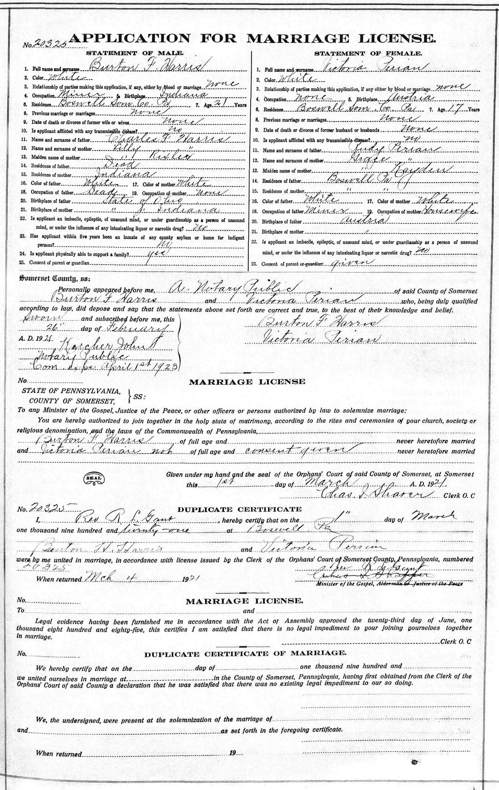
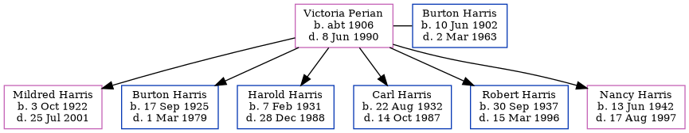

Victoria Betty Harris (née Perian) c1906 - 1990
[ Home ] | [ Calendar ] | [ Surnames Index ] | [ Errors ] | [ Family History ]Victoria Perian, the wife of Burton Franklin Harris (the fourth cousin twice-removed on the mother's side of Nigel Horne), was born in Austria c. 19061 and married Burton (a lorry driver with whom she had 6 children: Mildred Betty, Burton Franklin, Harold Leon, Carl V, Robert Rudolph and Nancy Marie) in Boswell, Somerset, Pennsylvania, USA on 1 Mar 19212.
During her life, she was living at 217 Duck Street, Fort Wayne, Allen, Indiana, USA on 1 Apr 19303; and at 2318 Curdes Avenue, Fort Wayne, Indiana on 12 Apr 19401.
She died on 8 Jun 1990 in Fort Wayne, Indiana.
Children
- Mildred Betty was born on 3 Oct 1922
- Burton Franklin was born on 17 Sept 1925
- Harold Leon was born on 7 Feb 1931
- Carl V was born on 22 Aug 1932
- Robert Rudolph was born on 30 Sept 1937
- Nancy Marie was born on 13 Jun 1942
Citations
- US Census 1940 - Findmypast (was age 35 and the wife of the head of the household)
- United States Marriages - Findmypast
- US Census 1930 - Findmypast (was age 26 and the wife of the head of the household)
Media
Burton Harris - Victoria Perian - marriage licenc

US Census 1940 - USC/1940/1456414439
United States Marriages - US/FS/M/022951043/2
Family Tree
Map
Generated by ged2site. Last updated on Jul 3, 2024
Known Issues
Death date (8 Jun 1990) has no citations
No records of living with anyone